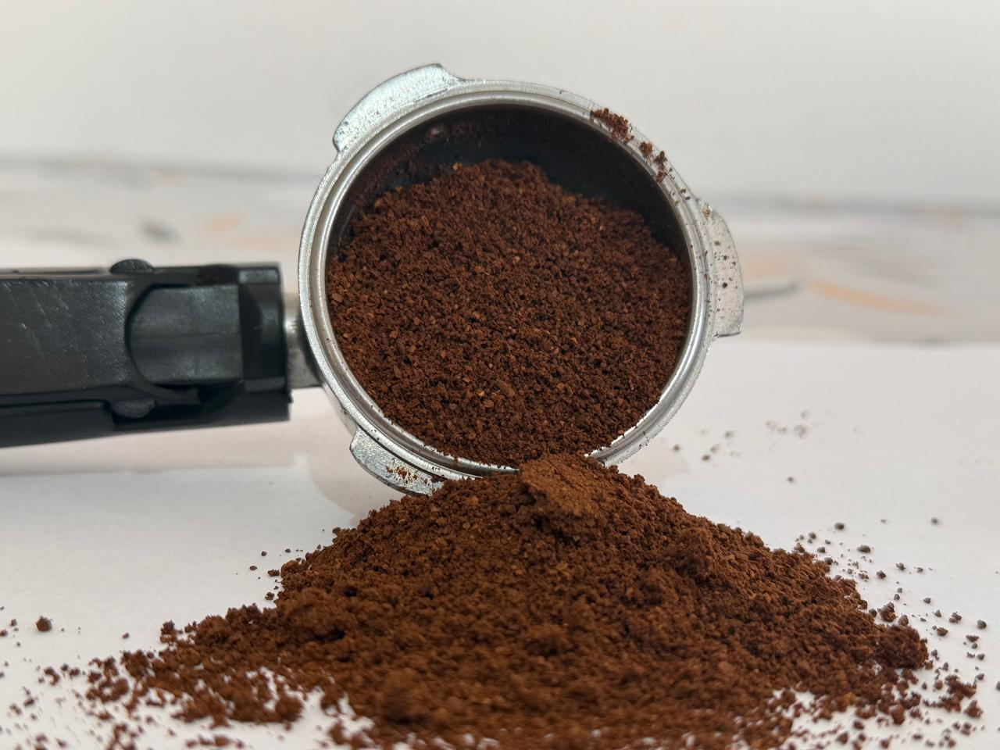
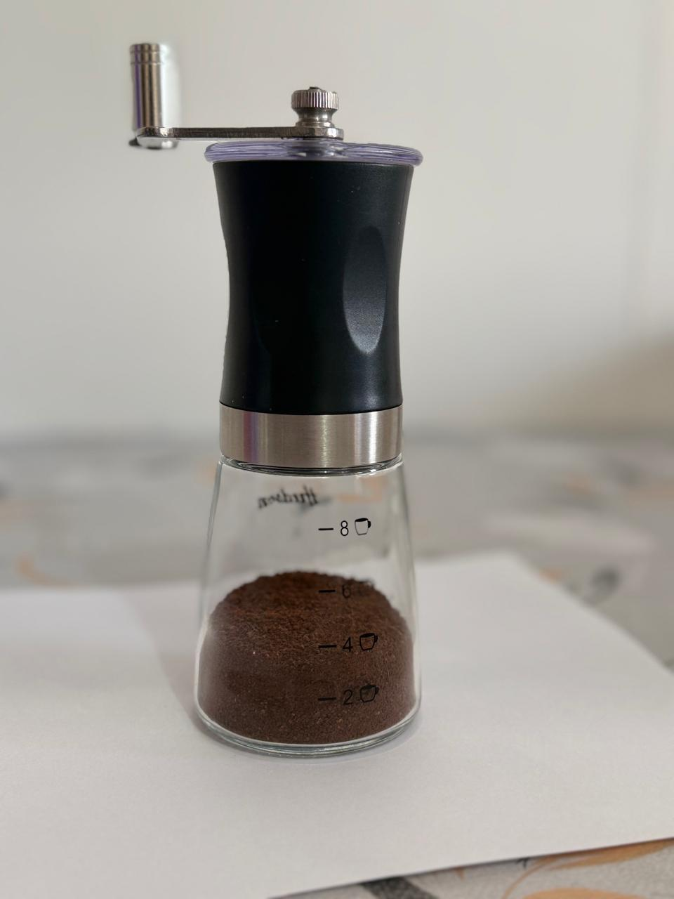
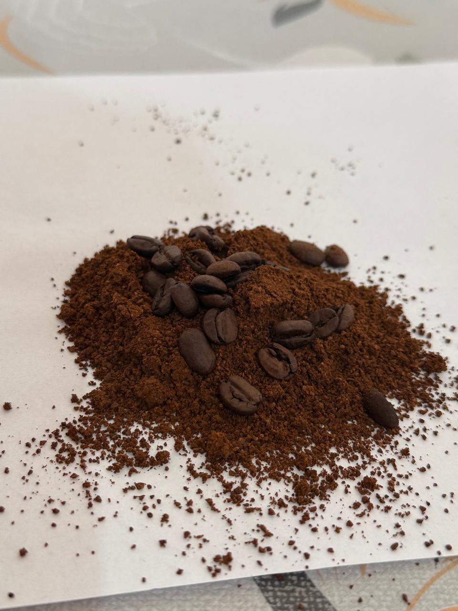

MOLIENDA
La molienda del café es el proceso físico de triturar los granos de café tostados para transformarlos en partículas más pequeñas. Es el paso crítico que define el éxito de la extracción, ya que determina la velocidad y la facilidad con la que el agua caliente disolverá los sabores, aceites y aromas contenidos dentro del grano.
Cuando el café está en grano entero, el agua solo puede tocar su superficie exterior. Al molerlo, el grano se rompe en miles de fragmentos pequeños, lo que multiplica la superficie de contacto con el agua.
- Subextracción (Molienda muy gruesa): El agua pasa de largo sin tiempo de extraer los compuestos buenos. El resultado es un café aguado, agrio y sin cuerpo.
- Sobreextracción (Molienda muy fina): El agua se estanca y extrae compuestos amargos y quemados. El resultado es una bebida muy amarga, astringente y desagradable.


